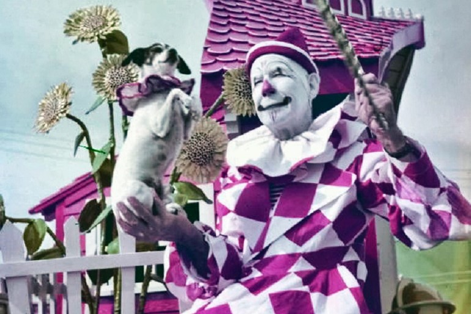
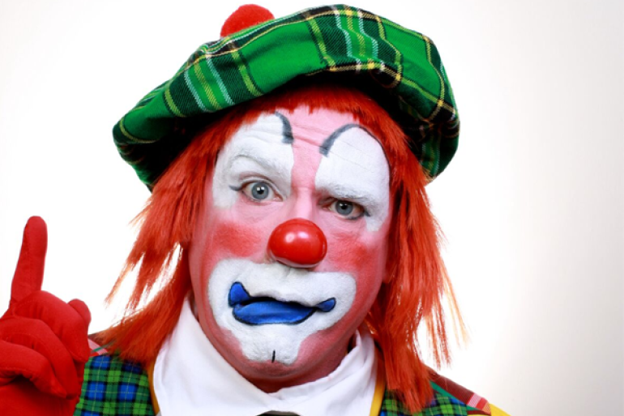
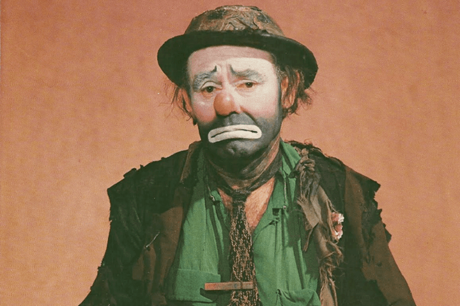
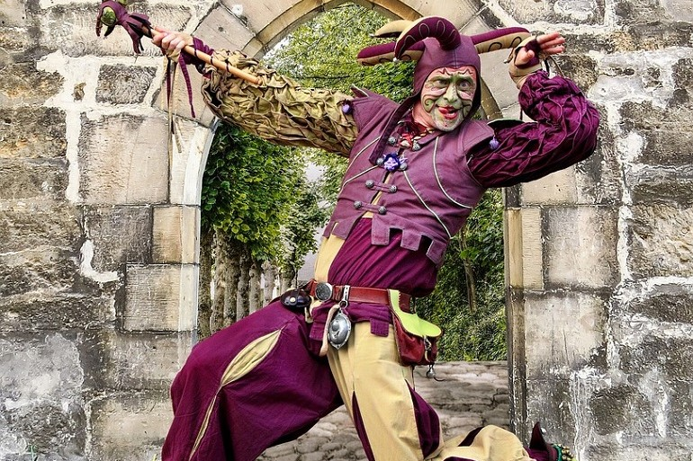
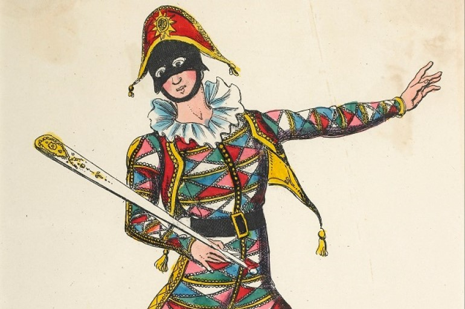
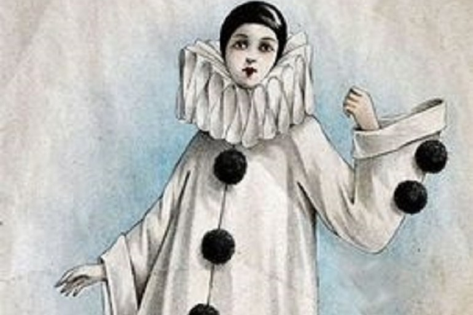

Clowns can actually be very diverse in looks and personality, and are categorized as their own distinct types. There are many variations but I chose to show the ones I thought were the most prominent.
Whiteface
The Whiteface is the prototypical clown. They usually play the straight man in performances and is more mature than their usual counterparts, the Auguste and Tramp. Whiteface clowns paint their face and neck white and paint on delicate features in either red or black. Their costumes are often more elaborate and glamorous, evoking a sense of nobility.
Auguste
The Auguste is the goofy foil to the Whiteface clown. They are fumbling, foolish characters and usually end up the victims of pranks pulled by the Whiteface. The Auguste clown wears white makeup around their eyes and mouth, leaving their natural skin tone visible. They will also don a fake red nose and paint their bottom lip red or black. Their costumes are often baggy, colorful jumpsuits with cartoonishly exaggerated bowties, shoes, and hats.
Tramp
Tramp clowns are a relatively new type of clown. They gained popularity during the Great Depression. Also known as a Hobo clown, the Tramp has a downtrodden personality, always the butt of joke and can never get a break. They wear a fake five o'clock shadow with white paint around the eyes and mouth and a ruddy nose. Their clothes are old and tattered.
Mime
Mimes are different from other types of clowns as they do not talk in their performances. They use literal and symbolic body movements to convey a story to their audience. Mimes can vary in looks but the most recognized version of a mime is white and black face paint cut off at the neck, a black and white striped t-shirt, black pants and suspenders.
Jester
The jester was a professional jokester who entertained the royal courts of the Middle Ages. Jesters were able to freely mock kings, queens, and nobles at a time when such a thing was severley stifled for common folk. Many jesters were well educated and loved by royals and commoners alike. Jesters sported a shaved head, over which they wore either a hat resembling donkey ears or the more popular "Fool's Hat", a three-pointed hat with little bells attached at each end. They wore a cowl or tunic in bright mismatched colors, tights that were often two toned, and pointed shoes.
Harlequin
Harlequin is one of the stock characters used in Italy's Commedia dell'arte, a kind of theatrical improv comedy popular during the Renaissance. He is characterized as being a loveable fool who gets himself into comprimising situations. He is very acrobatic and provides a lot of physical comedy. Harlequin usually wears a tight-fitting suit decorated with brightly colored triangle or diamond shaped patches, a felt hat, and a black mash that covers the top half of the face. The mask sometimes features a puggish nose with arched eyebbrows and devilish features to reflect his mischievious attitude. Harlequin is often seen carrying a wooden stick, which he uses to slaps other people or objects, the origin of the term "slap stick".
Pierrot
Pierrot is another character from the Commedia dell'arte. Contrasting with Harlequin, Pierrot is meek and the butt of pranks. In shows, he is usually pining for the love of another character, Columbina, with little success. Pierrot wears an oversized white jacket with large black buttons down the middle, white wide leg pants, and a black skull cap. Pierrot does not wear a mask, instead using white face makeup and occasionally accentuating facial features with black paint.
SOURCES
- https://www.clownantics.com/blogs/clownantics-blog/the-different-types-of-clowns
- http://www.charliethejugglingclown.com/types.htm
- http://www.medieval-life-and-times.info/medieval-life/medieval-jesters.htm
- https://www.italymask.co.nz/About+Masks/Commedia+dellArte+Characters.html
- https://www.britannica.com/topic/Pedrolino